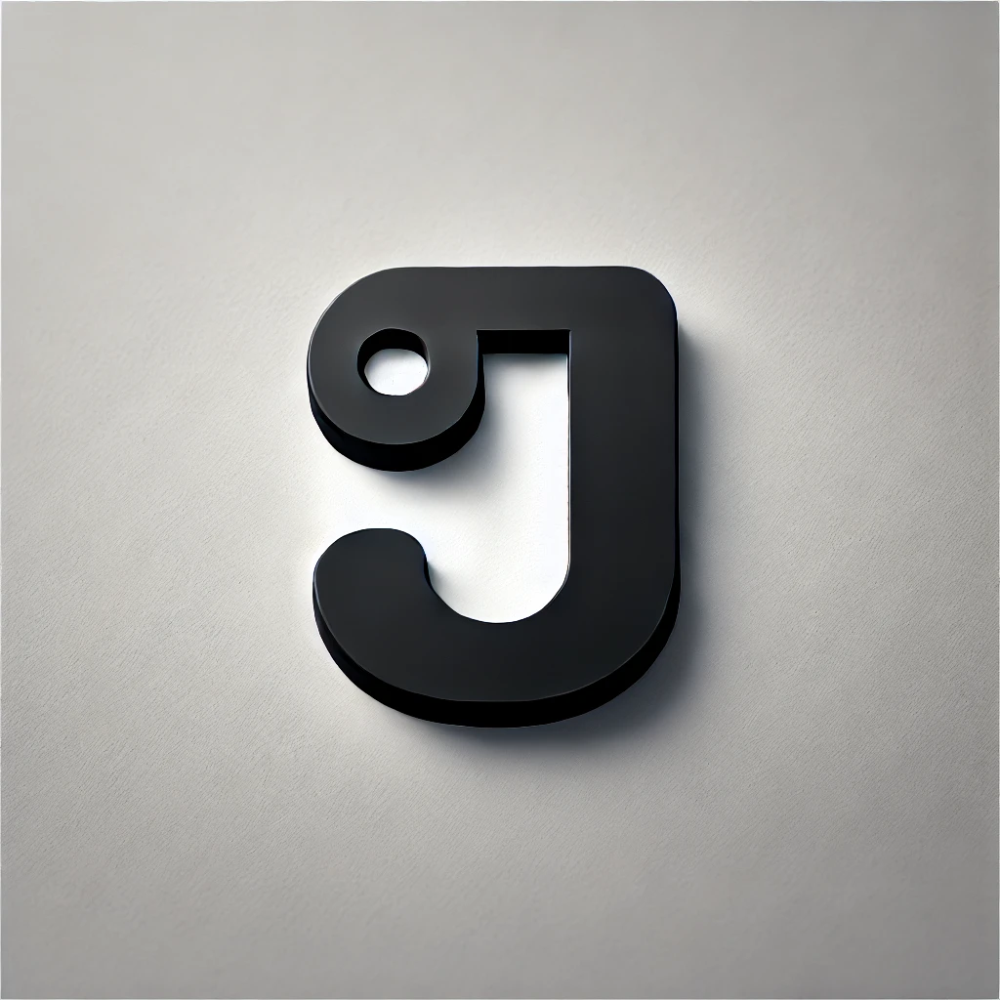

01 / 03
AI · Next.js · TypeScript
Document
management
An AI-powered app that classifies academic documents using Llama 3.1 and OCR, extracts keywords, and syncs files with Google Drive.
View on GitHub ↗Available for opportunities
Hi, I’m Joel — a final-year Computer Science Engineering student and full-stack developer who enjoys turning ideas into useful, human-centered products.

CSE / 2023—27Curious mind.
Practical maker.
A little background
I’m a motivated final-year Computer Science Engineering student at Loyola-ICAM College of Engineering and Technology, Chennai, maintaining a CGPA of 8.37.
With a strong foundation in problem-solving and technology, I’m passionate about learning new skills, applying knowledge to real-world projects, and collaborating in team environments.
My proactive mindset and analytical approach keep me focused on contributing to innovative solutions in computer science.
Tools & technologies
Building reliable object-oriented applications with a strong programming foundation.
Creating responsive, accessible interfaces with modern front-end tools and thoughtful interactions.
Working with data, queries, and database management to support practical applications.
Shaping clear user flows and polished visual systems from idea to interface.
Projects & accomplishments
AI · Next.js · TypeScript
An AI-powered app that classifies academic documents using Llama 3.1 and OCR, extracts keywords, and syncs files with Google Drive.
View on GitHub ↗Hackathon · Web app · Teamwork
A collaborative safety-focused web app built for rapid response and user safety. Ranked Top 10 at CTRL + ALT + HACK.
View on GitHub ↗HTML · CSS · Animations
A responsive personal portfolio with interactive UI components, smooth transitions, and modern design principles.
View project ↗